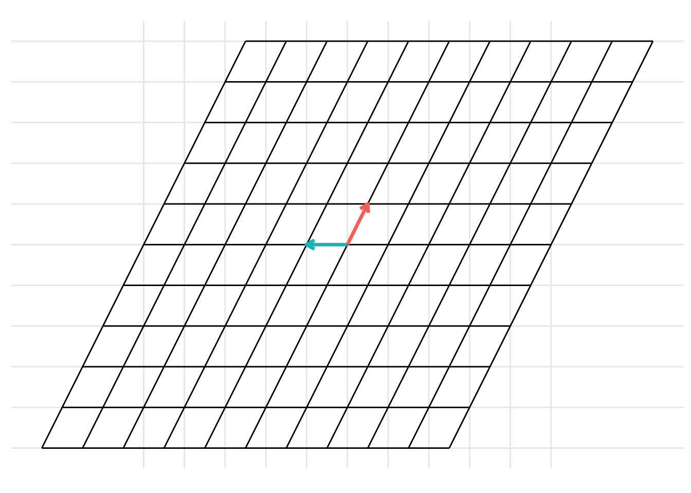

library(tidyverse)
library(dasc2594)19 Change of basis
Consider two bases \(\mathcal{B} = \{ \mathbf{b}_1, \ldots, \mathbf{b}_n \}\) and \(\mathcal{C} = \{ \mathbf{c}_1, \ldots, \mathbf{c}_n \}\) for a vector space \(\mathcal{V}\). If we have a vector \(\left[\mathbf{x}\right]_B\) with coordinates in \(\mathcal{B}\), what are the coordinates of \(\left[\mathbf{x}\right]_C\) with respect to \(\mathcal{C}\)?
- Recall: we know how to change from the standard coordinates to the basis \(\mathcal{B}\). If \(\mathbf{x}\) is a vector in the standard coordinates and \(\mathbf{B} = \begin{pmatrix} \mathbf{b}_1 & \ldots & \mathbf{b}_n \end{pmatrix}\) is a matrix with columns given by the basis \(\mathbf{B}\), the coordinates of \(\left[\mathbf{x}\right]_B\) of the vector \(\mathbf{x}\) with respect to the basis \(\mathcal{B}\) are
\[ \begin{aligned} \left[\mathbf{x}\right]_B = \mathbf{B}^{-1} \mathbf{x} \end{aligned} \]
and, as a consequence, given a vector \(\left[\mathbf{x}\right]_B\) with coordinates with respect to the basis \(\mathcal{B}\), the vector of coefficients \(\mathbf{x}\) with standard coordinates is given by
\[ \begin{aligned} \mathbf{x} = \mathbf{B} \left[\mathbf{x}\right]_B. \end{aligned} \]
Notice that change of coordinates is a linear transformation from \(\mathcal{B}\) to \(\mathcal{C}\) with transformation matrix \(\mathbf{A}\). Despite the more complex notation, this is just another linear transformation [link].
::: {#exm-} Show the change of basis from the basis \(\mathcal{B} = \left\{ \begin{pmatrix} \frac{1}{2} \\ 1 \end{pmatrix}, \begin{pmatrix} -1 \\ 0 \end{pmatrix}\right\}\) to the basis \(\mathcal{C} = \left\{ \begin{pmatrix} 0 \\ \frac{1}{2} \end{pmatrix}, \begin{pmatrix} 1 \\ -\frac{1}{2} \end{pmatrix}\right\}\). To do this, represent the columns that make up the basis \(\mathcal{B}\) as the matrix \(\mathbf{B} = \begin{pmatrix} \frac{1}{2} & -1 \\ 1 & 0 \end{pmatrix}\) and represent the columns that make up the basis \(\mathcal{C}\) as the matrix \(\mathbf{C} = \begin{pmatrix} 0 & \frac{1}{2} \\ 1 & -\frac{1}{2} \end{pmatrix}\). Then, the change of basis can be represented as
B <- matrix(c(1/2, 1, -1, 0), 2, 2)
C <- matrix(c(0, 1/2, 1, -1/2), 2, 2)
p <- plot_change_basis(B, C)
which can be represented with the static images

The change of basis represents a linear transformation. When previously discussing linear transformations in Chapter @ref(linear-transformations), we considered a linear transformation from the standard basis \(\mathcal{I}\) defined by the basis vectors \(\left\{ \begin{pmatrix} 1 \\ 0 \end{pmatrix}, \begin{pmatrix} 0 \\ 1 \end{pmatrix} \right\}\) with the vectors represented as the columns of the identity matrix \(\mathbf{I}\). We can consider a change of basis as two consecutive linear transformations. First, a linear transformation from the basis \(\mathcal{B}\) to the standard basis \(\mathcal{I}\) and then a linear transformation from the standard basis \(\mathcal{I}\) to the basis \(\mathcal{C}\). This can be represented using the following example code:
p <- plot_change_basis(B, C, plot_standard_basis = TRUE)

19.1 Changing coordinates between different bases
Now, we can combine these ideas. Given a vector \(\left[\mathbf{x}\right]_B\) written with coordinates with respect to the basis \(\mathcal{B}\), we can find the coordinates of \(\left[\mathbf{x}\right]_C\) with respect to the basis \(\mathcal{C}\). First, we find the coordinates of the vector \(\mathbf{x}\) with respect to the standard basis then find the coordinates of \(\left[\mathbf{x}\right]_C\) with respect to the basis \(\mathcal{C}\). Let \(\mathbf{B} = \begin{pmatrix} \mathbf{b}_1 & \ldots & \mathbf{b}_n \end{pmatrix}\) and \(\mathbf{C} = \begin{pmatrix} \mathbf{c}_1 & \ldots & \mathbf{c}_n \end{pmatrix}\), then given a vector \(\left[\mathbf{x}\right]_B\) with coordinates with respect to the basis \(\mathcal{B}\), the coordinates \(\left[\mathbf{x}\right]_C\) of this vector with respect to the basis \(\mathcal{C}\) is
\[ \begin{aligned} \left[\mathbf{x}\right]_C = \mathbf{C}^{-1} \mathbf{B} \left[\mathbf{x}\right]_B. \end{aligned} \]
Draw diagram
::: {.callout-note icon=false collapse=“true” appearance=“simple”} ## Solution
Example 19.1
Working with the same bases \(\mathcal{B} = \left\{ \begin{pmatrix} \frac{1}{2} \\ 1 \end{pmatrix}, \begin{pmatrix} -1 \\ 0 \end{pmatrix}\right\}\) and \(\mathcal{C} = \left\{ \begin{pmatrix} 0 \\ \frac{1}{2} \end{pmatrix}, \begin{pmatrix} 1 \\ -\frac{1}{2} \end{pmatrix}\right\}\) from the previous example, Let \(\left[\mathbf{x}\right]_B = \begin{pmatrix} -3/2 \\ 1/2 \end{pmatrix}\) be the coordinates of the vector \(\mathbf{x}\) with respect to the basis \(\mathcal{B} = \left\{ \begin{pmatrix} 1/2 \\ 1 \end{pmatrix}, \begin{pmatrix} -1 \\ 0 \end{pmatrix}\right\}\). Find
- the coordinates of \(\mathbf{x}\) with respect to the standard basis and
- the coordinates of \(\mathbf{x}\) with respect to the basis \(\mathcal{C}\).
Example 19.2
3-d change of basis